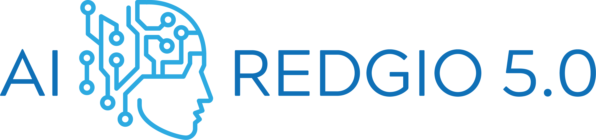

Input Analysis
Output Analysis

Collaborative Intelligence Component
Demonstrator for Industrial Pilots
Not connected to broker
Accuracy
Energy-efficiency
Latency
Load Config
Connect to Broker
Disconnect from Edge Device
Timestamp
Features
Target
Predicted
Status
AI Explaination
Send CSV
Export Non-OK Rows
GenAI
Recalibrate Model